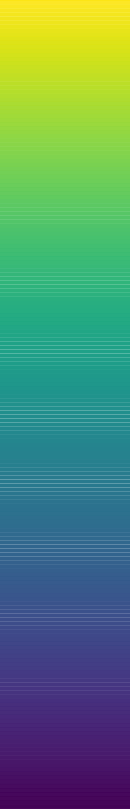

<!-- Basic experiment for online data collection (SONA or mTurk)-->

<!DOCTYPE html>
<html>
    <head>
        <title>Experiment</title>

        <!-- Load in the jspsych tools, plugins,and layout -->
        <script src= "scripts/jspsych.js"></script>
        <script src = "serverComm.js" type="text/javascript"></script>
        <script src= "scripts/jspsych-html-keyboard-response.js"></script>
        <script src= "scripts/jspsych-html-button-response.js"></script>
        <script src= "scripts/jspsych-image-keyboard-responseMAS.js"></script>
        <script src= "scripts/jspsych-html-keyboard-responseMAS-colorCompare.js"></script>
        <script src= "scripts/jspsych-audio-keyboard-response-MAS.js"></script>
        <script src = "scripts/jspsych-fullscreen.js"></script>
        <script src = "scripts/jspsych-survey-text.js"></script>
        <script src = "scripts/jspsych-survey-multi-select.js"></script>
        <script src = "scripts/jspsych-survey-multi-selectMAS.js"></script>
        <script src = "scripts/jspsych-survey-multi-choice.js"></script>
        <script src = "scripts/jspsych-call-function.js"></script>
        <link href= "scripts/jspsychMAS.css" rel="stylesheet" type="text/css"></link>
        <style>
        </style>
    </head>
    <body>
    </body>


<!--------------------- Here is where the experiment is created ------------------------------------------->
<script>

// ---------- UPDATE THESE ------------------
//General experiment info to update
    var expServer= 0; //0 = not server version; 1 = server version (checks ID register, condition, data saving)
        console.log(expServer)
    var expType = 0; // 0 = SONA version; 1 = mTurk version (relevant for consent & debriefing)
   
    var expTime = 30; // How long experiment will take in minutes
    var experimenterName = "schoenlein@wisc.edu"  //Update to your contact info. this is presented if an error arises for a participant
    var numConditions = 2; //Number of conditions. If more than 1 and on server, will counterbalance. 
    var numTasks = 2;  //Number of experimental tasks


    //Debriefing script- presents at very end of experiment. Describes the purpose of the experiment. Statements automatically included about receiving sona credit or entering a code for mTurk HITT. 
    // NOTE: if you have more than one between subjects condition, you MUST describe what the different conditions did/saw. 
    var debriefScript = "<p>Great job! You have finished the experiment.</p>" +
                "<p>The goal of this experiment is to investigate what factors influence people's associations between colors and concepts. In the first part of the experiment, a category learning task, you categorized colored aliens into two different species. Then in the second part of the experiment, you rated how much you associated colors with each alien species. In the third part, you indicated which of two colors was a better example of the color categories." +
                "We are interested in whether the colors of the aliens seen during the category learning task will influence the ratings between the colors and species during the second task." ;
                

    // Set background color // 
    document.body.style.backgroundColor = "rgb(119,119,119)" //(Gray)


// ----------- DO NOT CHANGE -----------------// 

// Create timeline variable //
    var timeline1 = []; //timeline for initial screen & fullscreen loading (before registering ID)
    var timeline = []; //timeline for experiment (once ID is registered)


// Pop-up box if people try to leave the page (including refreshing) 
    window.onbeforeunload = function() {
        return "If you leave or refresh the page, you will not be able to finish the experiment.";
    };


// Initial welcome screen
    var initial_screen = {
        type: 'html-button-response',
        stimulus: 'Welcome to our experiment!' +
            '<p>At the bottom of this screen, you will see a button that says "Begin Experiment".'+
            '<br>Please only click that button when you are ready to complete the '+expTime+' minute experiment in one sitting.</p>'+
            '<p> Once you click that button, it will not be possible to restart the experiment.',
        choices: ['Begin Experiment'] }
    timeline1.push(initial_screen);


// Get & create subject ID
    //Give each subject a random ID
    var randomID = Math.floor((Math.random() * 10000) + 10000); // Create a random ID code for each participant
    var subject_id = randomID // Create a random ID code for each participant

    //Give each subject a completion code to enter into mTurk
    var complete_code= Math.floor((Math.random() * 10000) + 30000);

    //Get mTurk/sonaID
    var urlvar = jsPsych.data.urlVariables();
    var workerID = urlvar.id


//Enter fullscreen mode- asks participants to press "continue" button to enter full screen
    // Once participants enter fullscreen mode, their ID is recorded
    timeline1.push({
        type: 'fullscreen',
        fullscreen_mode: true, //change to true to turn on & false to turn off
        on_finish: function (){registration()} // Function to register subject ID
        })


// Check if worker/sonaID is already recorded
  function registration(){

    // If not on server, move on
    if (expServer == 0){
        register_success(); //calls the entire experiment to begin

    //If on server, check if ID has been registered
    }else if (expServer == 1){
        serverComm.register_subject(workerID,
            function(){ // If the subject has a unique id that has not yet been recorded, the experiment will load/begin.
                register_success(); //calls the entire experiment to begin
            },
            function(){ // If ID has already been registered, give error message. 
                document.querySelector('body').innerHTML = '<p>Our records indicate that you have already started this experiment. Due to the nature of the experiment, restarting is not permitted.</p><p>If you believe this message is in error, you can contact the researchers at '+experimenterName+'.</p><p>Our apologies for the trouble.</p>';
            },
            function(){ // If there is a technical error.
                document.querySelector('body').innerHTML = '<p>Our apologies. There was a technical error on our end while loading the experiment.</p><p>You will not be able to complete the experiment. You can contact the researchers at '+experimenterName+' with any questions.</p><p> Our apologies for the trouble.</p>';
            })
        }
    }


function register_success (){ // the entire experiment is embedded in this function

// Assignment to a condition //
    //Condition 0 = 
    //Condition 1 = 
    //Condition n... 

    var assigned_condition = null;
    var n_conditions = numConditions; 

    // Not on server- randomly select condition
    if (expServer == 0){
        function getRandomIntInclusive(min, max) {
            min = Math.ceil(min);
            max = Math.floor(max);
            return  Math.floor(Math.random() * (max - min + 1));
        }
        assigned_condition = getRandomIntInclusive(0,n_conditions-1);
        condition_success()

    //If on server, check condition of previous participant
    }else if (expServer == 1){
        serverComm.assign_condition(subject_id, n_conditions,
        function(response){
            assigned_condition = response.assignedCondition; //Using the table in the database to assign conditions
            condition_success()
        },
        function(){
             document.querySelector('body').innerHTML = '<p>Our apologies. There was a technical error on our end while loading the experiment.</p><p>You will not be able to complete the experiment. You can contact the researchers at schoenlein@wisc.edu with any questions.</p><p>Our apologies for the trouble.</p>';
        });
    }


 function condition_success(){ //the entire experiment is now embedded in this function.

// Set condition
    var whichCondition = assigned_condition;
    console.log(whichCondition)

// Get Start time
    var start_time = new Date();


// Record mturk/SONAID, condition, subjectID, and date info
    jsPsych.data.addProperties({workerID: workerID, conditionProto: whichCondition, subjectID: subject_id, dateInfo: start_time});


// "Fake trial" for checking if experiment loaded correctly
    var loadCheck = {
        type: 'html-keyboard-response',
        stimulus: "",
        choices: jsPsych.NO_KEYS,
        trial_duration: 10}
    timeline.push(loadCheck);


// Save the fake trial data to the server (this is done as a way to check that if there is not a full dataset for a registered ID, that the experiment loaded properly and the participant dropped out)
    timeline.push({
        type: 'call-function',
        func: function(){saveData(jsPsych.data.get())}
        });

/*
// Consent form
    //SONA VERSION
    if (expType == 0){
        var consentSign = {
            type: 'survey-multi-selectMAS',
            questions: [
                {prompt:
                "  <strong>UNIVERSITY OF WISCONSIN-MADISON</strong>" +
                "  <br><strong>Research Participant Information and Consent Form</strong>" +
                " <br><br><strong>Title of the Study:</strong> Investigating how observers perceive, interpret, and evaluate visual features in 2D scenes and 3D environments" +
                " <br><br><strong>Principal Investigator:</strong> Karen B. Schloss (phone: 608-316-4495) (email: kschloss@wisc.edu)" +
                "  <br><br><strong><u>DESCRIPTION OF THE RESEARCH</u></strong>" +
                "  <br>You are invited to participate in a research study about how visual features influence the ability to perceive, interpret, navigate, and remember information in visual displays." +
                "  <br><br>You have been asked to participate because you saw a description of the study and signed up to be a participant." +
                "  <br><br>The purpose of the research is to understand principles by which people perceive, evaluate and interpret visual information (e.g., the meaning of parts of a scientific diagram)." +
                "  <br><br>This study will include adults from UW-Madison and nearby areas who volunteer to participate." +
                "  <br><br>The research will be conducted online, with no requirement to appear in person." +
                "  <br><br><strong><u>WHAT WILL MY PARTICIPATION INVOLVE?</u></strong>" +
                "  <br>If you decide to participate in this research you will be presented with visual displays containing images and/or text and will be asked to make judgments about them. For example, you may see shapes and be asked how round they appear or view a graph with a legend and interpret information about the data in the graph. You will be asked to respond by making button presses on a keyboard/mouse. You may be asked to complete questionnaires about your expertise or educational level in a given domain (e.g., neuroscience) and questionnaires about what sorts of things you like/dislike. Finally, you may be asked to respond to questions about your experience during the experiment (e.g., how much you enjoyed the task)." +
                "  <br><br>You will be asked to complete 2-6 surveys or tasks." +
                "  <br><br>Your participation will last approximately 30 min - 60 min per session (as specified when you signed up to participate) and will require 1 session (30 to 60 min total)." +
                "  <br><br><strong><u>ARE THERE ANY RISKS TO ME?</u></strong>" +
                "  <br>We don't anticipate any risks to you from participation in this study." +
                "  <br><br><strong><u>ARE THERE ANY BENEFITS TO ME?</u></strong>" +
                "  <br>There are no direct benefits for participating in this study." +
                "  <br><br><strong><u>WILL I BE COMPENSATED FOR MY PARTICIPATION?</u></strong>" +
                "  <br>You will receive the number of extra credit points that were specified when you signed up for this experiment (1 credit for 30 min slot, 2 credit = 60 min slot), to be used in your class for participating in this study." +
                "  <br><br>If you do withdraw prior to the end of the study, you will receive no compensation." +
                "  <br><br><strong><u>HOW WILL MY CONFIDENTIALITY BE PROTECTED?</u></strong>" +
                "  <br>While there will probably be publications as a result of this study, your name will not be used. Typically, group characteristics will be published, but datasets with individual responses may also be shared. In such cases, the data will not be linked to your name or other identifiable information." +
                "  <br><br><strong><u>WHOM SHOULD I CONTACT IF I HAVE QUESTIONS?</u></strong>" +
                "   <br>You may ask any questions about the research at any time. If you have questions about the research you can contact the Principal Investigator Karen B. Schloss at 608-316-4495." +
                "   <br><br>If you are not satisfied with response of research team, have more questions, or want to talk with someone about your rights as a research participant, you should contact the Education and Social/Behavioral Science IRB Office at 608-263-2320." +
                "  <br><br>Your participation is completely voluntary. If you decide not to participate or to withdraw from the study you may do so without penalty." +
                "  <br><br>By clicking the box below, you confirm that you have read this consent form, had an opportunity to ask any questions about your participation in this research and voluntarily consent to participate. You may print a copy of this form for your records." +
                "  <br><br>Please click the box below next to the text 'I consent' to give your informed consent to participate. " +
                "   </p>",
                options: ["<strong>I consent</strong>"],
                horizontal: false,
                required: true,
                name: 'Consent'},
                ],
            button_label: "Start Experiment",
            };

    // MTURK VERSION
    }else if (expType == 1){
         var consentSign = {
            type: 'survey-multi-selectMAS',
            questions: [
                {prompt:
                "  <strong>UNIVERSITY OF WISCONSIN-MADISON</strong>" +
                "  <br><strong>Research Participant Information and Consent Form</strong>" +
                " <br><br><strong>Title of the Study:</strong> Investigating how observers perceive, interpret, and evaluate visual features in 2D scenes and 3D environments" +
                " <br><br><strong>Principal Investigator:</strong> Karen B. Schloss (phone: 608-316-4495) (email: kschloss@wisc.edu)" +
                "  <br><br><strong><u>DESCRIPTION OF THE RESEARCH</u></strong>" +
                "  <br>You are invited to participate in a research study about how visual features influence the ability to perceive, interpret, navigate, and remember information in visual displays" +
                "  <br><br>You have been asked to participate because you accepted the HIT on Amazon Mechanical Turk." +
                "  <br><br>The purpose of the research is to understand principles by which people perceive, evaluate and interpret visual information (e.g., the meaning of parts of a scientific diagram)." +
                "  <br><br>This study will include adults (at least 18 yrs) from who participate in Amazon Mechanical Turk HITs." +
                "  <br><br>The research will be conducted on the electronic device that you are using." +
                "  <br><br><strong><u>WHAT WILL MY PARTICIPATION INVOLVE?</u></strong>" +
                "  <br>If you decide to participate in this research you will be presented with visual displays containing images and/or text and will be asked to make judgments about them. For example, you may see shapes and be asked how round they appear or view a graph with a legend and interpret information about the data in the graph. You will be asked to respond by making button presses on a keyboard/mouse. You may be asked to complete questionnaires about your expertise or educational level in a given domain (e.g., neuroscience) and questionnaires about what sorts of things you like/dislike. Finally, you may be asked to respond to questions about your experience during the experiment (e.g., how much you enjoyed the task)." +
                "  <br><br>You will be asked to complete 2-6 surveys or tasks." +
                "  <br><br>Your participation will last approximately 5 min - 60 min per session and will require 1 session." +
                "  <br><br><strong><u>ARE THERE ANY RISKS TO ME?</u></strong>" +
                "  <br>We don't anticipate any risks to you from participation in this study." +
                "  <br><br><strong><u>ARE THERE ANY BENEFITS TO ME?</u></strong>" +
                "  <br>We don't expect any direct benefits to you from participation in this study." +
                "  <br><br><strong><u>WILL I BE COMPENSATED FOR MY PARTICIPATION?</u></strong>" +
                "  <br>The amount of compensation depends on the length of the task, based on a rate of $7.25 per hour. The compensation amount for this HIT, as specified in the HIT description, was pre-determined based on the amount of time it took previous participants to do similar tasks."+
                "  <br><br>If you do withdraw prior to the end of the study, you will receive no compensation." +
                "  <br><br><strong><u>HOW WILL MY CONFIDENTIALITY BE PROTECTED?</u></strong>" +
                "  <br>Participant information will remain confidential. Neither your name or any other identifiable information will be recorded. Typically, group characteristics will be published, but datasets with individual responses may also be shared. In such cases, the data will not be linked to your name or other identifiable information." +
                "  <br><br><strong><u>WHOM SHOULD I CONTACT IF I HAVE QUESTIONS?</u></strong>" +
                "   <br>You may ask any questions about the research at any time. If you have questions about the research you can contact the Principal Investigator Karen B. Schloss at 608-316-4495." +
                "   <br><br>If you are not satisfied with response of research team, have more questions, or want to talk with someone about your rights as a research participant, you should contact the Education and Social/Behavioral Science IRB Office at 608-263-2320." +
                "  <br><br>Your participation is completely voluntary. If you decide not to participate or to withdraw from the study you may do so without penalty." +
                "  <br><br>By clicking the box below, you confirm that you have read this consent form, had an opportunity to ask any questions about your participation in this research and voluntarily consent to participate. You may print a copy of this form for your records." +
                "  <br><br>Please click the box below next to the text 'I consent' to give your informed consent to participate. " +
                "   </p>",
                options: ["<strong>I consent</strong>"],
                horizontal: false,
                required: true,
                name: 'Consent'},
                ],
            button_label: "Start Experiment",
            };
    }
    timeline.push(consentSign);


// Inter trial interval //
    var fixation = {
        type: 'html-keyboard-response',
        stimulus: '<div style= "font-size:45px;">+</div>',
        choices: jsPsych.NO_KEYS,
        trial_duration: 500
    }


 var totalTasks = numTasks + 1; 

// Overview instructions of experiment
    var overview_instructions = {
        type: 'html-button-response',
        stimulus: 'Welcome! <p> This experiment involves '+totalTasks+' parts: demographic information, followed by '+numTasks+' experimental tasks.' +
            '<p> It will take about '+expTime+' minutes to complete all '+totalTasks+' parts.',
        choices: ['Continue']
    }
    timeline.push(overview_instructions);


// Demographic questions
    // Age, gender, race/ethnicity, and language  
    var age_lang_demo = {
        type: 'survey-text',
        questions: [
            {prompt: "Age", name: 'Age', rows: "1", columns: "3", required: true,},
            {prompt: "Gender", name: 'Gender', rows: "1", columns: "15", required: true,},
            {prompt: "Race/ethnicity", name: 'Race/ethnicity', rows: "1", columns: "30", required: true,},
            {prompt: "List all languages you know", name: "Languages", rows: "6", columns: "60", required: true,}
            ],
        preamble: "Please answer the following questions.",
        button_label: "Done",
        randomize_question_order: false
        }
    timeline.push(age_lang_demo);

   // handedness
   var hand_demo = {
        type: 'survey-multi-select',
        questions: [
            {prompt: "Please select your preferred hand",
            options: ["Left", "Right", "Prefer to not respond"],
            horizontal: false,
            required: true,
            name: 'Hand'},
            ],
        button_label: "Done",
        randomize_question_order: false
        };
    timeline.push(hand_demo);


// Consent and demo Completion
    var demo_completion = {
        type: "html-keyboard-response",
        stimulus: "<p>Great job!</p> You have completed the consent process and answered the demographic questions." +
            "<p> Press the spacebar to continue to the first experimental task. </p>",
        choices: [32]
        };

    timeline.push(demo_completion);


// ----------- START UPDATING HERE ---------------//

/* --------------------------------------- Part 1: Word comparison  ------------------------ */

//This is an example that presents two words on the screen at the same time, and participants must select the left/right one. There are three pairs
// of words. Each pair is presented once, in a random order, with the target word randomly on either the left or right side. 

audioFiles = ["img/birds.mp3", "img/ducks.mp3", "img/frogs.mp3", "img/quack.mp3", 
"img/rooster.mp3", "img/elephant.mp3", "img/cicada.mp3", "img/kookaburras.mp3", 
"img/horse.mp3", "img/sheep.mp3"]
numAudio = 10; 
Counter = [0,0,0,0,0,0,0,0,0,0] // auto-gen size

colorScaleFiles = ["img/Viridis_cols.png", "img/scale_blue.png"]
numColorScales = 2; 


//Loop 
for (audio = 0; audio < audioFiles.length;){
 

    // Randomly select a target audio //
    function getRandomIntInclusive(min, max) {
            min = Math.ceil(min);
            max = Math.floor(max);
            return  Math.floor(Math.random() * (max - min + 1)) + min;
            }
    var whichAudio1 =  getRandomIntInclusive(0,numAudio-1);
    var whichAudio2 =  getRandomIntInclusive(0,numAudio-1);
    //var whichAudio =  getRandomIntInclusive(0,numAudio-1);
    var whichColorScale = getRandomIntInclusive(0,numColorScales-1);


    // Check if target word has been presented yet.
    //if ((Counter[whichAudio1] == 0 && Counter[whichAudio2] == 0) && (whichAudio1 != whichAudio2)){
    if ((Counter[whichAudio1] == 0) && (Counter[whichAudio2] == 0)){
    //if (Counter[whichAudio] == 0){
        
        // Break works but continue doesn't ?
        if (whichAudio1 == whichAudio2) {
            audio++;
            continue;
        }

        // Audio trial //
        var audio_trial = {
            type: "audio-keyboard-response-MAS",
                //audioStimulus1: audioFiles[whichAudio],
                audioStimulus1: audioFiles[whichAudio1],
                //imageStimulus: colorScaleFiles[3],
                prompt: "Sound 1: <br> <br> ",
                choices: [32], 
                response_ends_trial: true
            };
        timeline.push(audio_trial);

        // EDITING - need to randomize whichAudio for audioFiles and mark usage ----- or can leave as 'Sound'
        Counter[whichAudio1] = 1;
        //whichAudio = getRandomIntInclusive(0,numAudio-1);


        // Audio trial TEST //
        var audio_trial = {
            type: "audio-keyboard-response-MAS",
                //audioStimulus1: audioFiles[whichAudio],
                audioStimulus1: audioFiles[whichAudio2],
                prompt: "Sound 2: <br> <br> ",
                choices: [32], 
                response_ends_trial: true
            };
        timeline.push(audio_trial);


      Counter[whichAudio2]= 1; //Marks that the trial was completed
      audio += 2;


      var question = {
        type: 'survey-multi-choice',
        questions: [
            {prompt: `<div id='outer'> 
                        <div id='color-scale'></div>
                        <div id='question'>Which sound was higher on this color scale?<br><br></div>
                      </div>`,
            options: ["Sound 1", "Sound 2"],
            horizontal: true,
            required: true,
            name: 'higherSound'}
        ],
        preamble: "",
        button_label: "Done",
        randomize_question_order: false
        };
    timeline.push(question);

    }  


    // // SECOND IF
    // if (Counter[whichAudio] == 0) {
    //             // Audio trial TEST //
    //             var audio_trial = {
    //         type: "audio-keyboard-response-MAS",
    //             audioStimulus1: audioFiles[whichAudio],
    //             prompt: "Sound 2: ",
    //             choices: [32], 
    //             response_ends_trial: true
    //         };
    //     timeline.push(audio_trial);


    //   Counter[whichAudio]= 1; //Marks that the trial was completed
    //   audio++

    //   var question = {
    //     type: 'survey-multi-choice',
    //     questions: [
    //         {prompt: "Which sound was higher, Sound 1 or Sound 2?",
    //         options: ["Sound 1", "Sound 2"],
    //         horizontal: false,
    //         required: true,
    //         name: 'higherSound'}
    //     ],
    //     preamble: "",
    //     button_label: "Done",
    //     randomize_question_order: false
    //     };
    // timeline.push(question);
    // }


    else{
}}


/*


// Attention check //
var attn_instructions = {
    type: "html-keyboard-response",
        stimulus: 
        "<p>In this task, you will see two object names, side by side." +
        "<br> Please select which object name appeared in the previous task.</p>"+
        "<p>If you think the name on the left appeared in the previous task, press the left arrow key."+
        "<br>If you think the name on the right appeared in the previous task, press the right arrow key.</p>" +
        "<br>This part of the experiment will take about 2 minutes.</p>"+
        "<p>Please press the spacebar to begin.</p>",
        post_trial_gap: 500,
        choices: [32]
    };
    timeline.push(attn_instructions);


// Attn check preparation: set up conditions and counters
    var objectText =  ["FILK", "SLUB", "CAT"]
    var novelText =   ["MONKEY", "SNAKE", "DOG"]
    var Counter = [0,0,0]
    var numObjects = 3


// Attention check Trial sequence //
    for (obj =0; obj < objectText.length;){

        // Randomly select a target object //
        function getRandomIntInclusive(min, max) {
                min = Math.ceil(min);
                max = Math.floor(max);
                return  Math.floor(Math.random() * (max - min + 1)) + min;
                }
        var whichObject =  getRandomIntInclusive(0,numObjects-1);

        // Select whether target on left/right
        var whichSide =  Math.random();
            if(whichSide<0.5){  //Target on left
                whichSide =Math.floor(whichSide)
                leftObject =  objectText;
                rightObject = novelText;
            }else{ //Target on right
                whichSide= Math.ceil(whichSide)
                leftObject =  novelText;
                rightObject = objectText;
            }


        // Check if target word has been presented yet.
        if (Counter[whichObject] == 0){

            // ITI //
            timeline.push(fixation)


            // Attention check trial //
            //target on left
            if (whichSide == 0){
                var attention_trial = {
                    type: 'html-keyboard-responseMAS-colorCompare',
                    stimulusLeft: leftObject[whichObject], //stimulus reported in output = stimulusLeft
                    stimulusRight: rightObject[whichObject],
                    choices: [37,39],
                    response_ends_trial: true,
                   // prompt: "",
                    trial_type: "Present",
                    target_side: whichSide,
                    on_finish:
                        function(data){
                            if(data.key_press == 37 ){
                                data.correct = true;
                            } else {
                                data.correct = false;}
                        }}

            // target on right
            }else if (whichSide == 1){
                var attention_trial = {
                    type: 'html-keyboard-responseMAS-colorCompare',
                    stimulusLeft: leftObject[whichObject], //stimulus reported in output = stimulusLeft
                    stimulusRight: rightObject[whichObject],
                    choices: [37,39],
                    response_ends_trial: true,
                   // prompt: "",
                    trial_type: "Present",
                    target_side: whichSide,
                    on_finish:
                        function(data){
                          if(data.key_press == 39 ){
                                data.correct = true; 
                            } else {
                              data.correct = false;}
                        }}
            }
            timeline.push(attention_trial)

            //Feedback box around word
            var compFeed_trial = {
                    type: 'html-keyboard-responseMAS-colorCompare',
                    stimulusLeft: leftObject[whichObject],
                    stimulusRight: rightObject[whichObject],
                    choices: [37,39],
                    //prompt: "",
                    response_ends_trial: false,
                    trial_duration: 500,
                    trial_type: "Feedback",
                    target_side: whichSide,
                    response_sideSelected: function(){
                        var last_trial_selection = jsPsych.data.get().last(1).values()[0].key_press;
                        if(last_trial_selection == 37){
                            return  0
                        }else {
                            return 1
                        }},
                }
                timeline.push(compFeed_trial)

            Counter[whichObject]= 1; //Marks that the trial was completed
            obj++
        }else{
    }}


// Part 1 Completion
var part_completion = {
        type: "html-button-response",
        stimulus: "<p>Great job!</p> You have completed part 1 of "+numTasks+" of the experiment. <br></br>",
        choices: ['Continue']
    };
    timeline.push(part_completion);


/*----------------------------------Part 2: Other plugins ------------------------------------ */

//Below are some examples of other types of plugins that can be used. 


//If multiple conditions, use if statements to direct which stimuli to be presented depending on which condition participants are in. 
    // Condition 0 
//     if (whichCondition == 0 ){
//         objectColor = "cols"
//         whichObject = "Viridis"
//     // Condition 1
//     }else if (whichCondition == 1){
//         objectColor = "blue"
//         whichObject = "scale"
//     }
  

// // Inter-trial interval //
//     var fixation = {
//         type: 'html-keyboard-response',
//         stimulus: '<div style= "font-size:45px;">+</div>', //plus sign
//         choices: jsPsych.NO_KEYS,
//         trial_duration: 500 //only present for 500ms 
//     }
//     timeline.push(fixation)


//  // Single image
//     var single_image_trial = {
//         type: 'image-keyboard-responseMAS',
//         stimulus: "img/"+whichObject+"_"+objectColor+".png", //image based on which condition was selected
//         prompt: objectColor, //text
//         prompt_location: "above", //text presented above the iamge
//         stimulus_height: 150,
//         trial_type: "TextFeed", 
//         trial_duration: 2000, //presents for 2secd
//         response_ends_trial: true, //or until the right arrow is pressed
//         choices: [39]  //right arrow key
//     }
//     timeline.push(single_image_trial)


    
/* ---------------------------------- End of main experiment ---------------------------------------- */


// ------------- DO NOT CHANGE  ------------//  

// Color Vision check //
    var colorvision = {
        type: 'survey-multi-choice',
        questions: [
            {prompt: "Do you have difficulty seeing colors or noticing differences<br>between colors compared to the average person?",
            options: ["Yes", "No"],
            horizontal: false,
            required: true,
            name: 'colorDifficulty'},

            {prompt: "Do you consider yourself to be colorblind? ",
            options: ["Yes", "No"],
            horizontal: false,
            required: true,
            name: 'colorBlind'}
        ],
        preamble: "",
        button_label: "Done",
        randomize_question_order: false
        };
    timeline.push(colorvision);


//Exit fullscreen
timeline.push({
    type: 'fullscreen',
    fullscreen_mode: false
})


//Saving data
    //server calling with AJAX
        function saveData(data_object) {
        var xhr = new XMLHttpRequest();
        xhr.open('POST', 'write_data.php');
        xhr.setRequestHeader('Content-Type', 'application/json');
        xhr.onload = function() {
            if(xhr.status == 200){
            var response = JSON.parse(JSON.stringify(xhr.responseText));

            }
        };
        xhr.send(data_object.json());
        }

    //Remove (from jspsych data) the first line of data (consent form), which has already been written to the database & create a new variable with the rest of the data to save
    function finalSave (){
        var data_to_save = jsPsych.data.get().filterCustom(function(trial){
            return trial.trial_index > 0;})
        saveData(data_to_save)
        }

    //Call function to save all the data
        timeline.push({
        type: 'call-function',
        func: finalSave
        });


    //Record ID of subjects who completed the experiment     
    function logComplete (){
            serverComm.completion_data(workerID)
    }

    //Call function to save the worker ID
    timeline.push({
        type: 'call-function',
         func: logComplete
        });


// ------------- UPDATE DEBRIEFING SCRIPT  ------------//  

//Present completion/debriefing screen
var end_completion = {
        type: "html-keyboard-response",
        stimulus: function(){

             //SONA version
            if (expType == 0){
                if (expServer == 0){
                jsPsych.data.get().localSave('csv',randomID+".csv") // saves to local device if not on server. 
                }
                 return ""+debriefScript+""+
                "<p>Please do not inform other potential participants of the hypotheses in our experiment.</p>"+
                "<p>Credit for your participation will be appear on SONA in the next few days.</p>"+
                "<p>Thank you for participating!<br>You may now close this window.</p>";

             // mTurk version
            }else if (expType == 1){
                return ""+debriefScript+""+
                "<p>Thank you for participating!"+
                "<br>Please enter the following code on your mTurk HIT: <br>"+complete_code+"</p>"+
                "<p>You may now close this window.</p>";
            }},

        choices: jsPsych.NO_KEYS} //Prevents any input reponse from moving beyond the screen
    timeline.push(end_completion)


// Run the main timeline sequence this timeline is embedded in the register_success & condition_success function
    jsPsych.init({
            timeline: timeline,
          //  preload_images: imgSet,
        })

 } // end of condition_success function
}//end of register_success function


// Run the timeline sequence // - Timeline1 for initial screen (before ID recorded)
jsPsych.init({
     timeline: timeline1,
    })


    </script>
</html>
